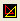

We will return to gradients later. They are important, but not as much as you might think. Instead, we will turn our attention to the color transform color slider. Open up your transform editor  and click the colors tab, as shown in the picture above.
Each transform, from one through four, has one of these colors tabs. Now, the most
important thing on this tab is the color slider
, and the second
most important thing on this tab is the symmetry option.
 All right. Select each transform, from one through 4, and set their transform color slider all the way to the left, so that it's value is zero. Also, in each transform, set the value in the symmetry box to 0.
All right. Select each transform, from one through 4, and set their transform color slider all the way to the left, so that it's value is zero. Also, in each transform, set the value in the symmetry box to 0.
Your fractal will look something like this. A flat, colored square. BOOOORING! Lesson#1 in fractal coloring: it is almost always a good idea to have at least one color slider on one of the transforms set to a value greater than 0.